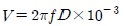
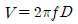
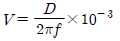
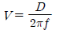
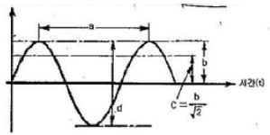
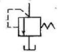
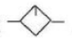
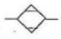
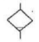
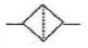

설비보전기사(구) (2010-09-05 기출문제)
1과목: 설비 진단 및 계측
1. 아날로그 값을 디지털 값으로 변환하는 것을 무엇이라 하는가?
- D/A 변환기
- A/D 변환기
- A/A 변환기
- D/D 변환기
(정답률: 89%)

2. 단순 팽창형 소음기에 대한 설명이다. 틀린 것은?
- 팽창형 소음기는 급격한 관경확대로 유속을 낮추어 소음을 감소시키는 소음기이다.
- 팽창형 소음기는 단면 불연속부에서 음에너지가 반사되어 소음을 감소시키는 구조이다.
- 감음주파수는 팽창부의 길이에 따라 결정되며 팽장부의 길이를 파장의 1/4배로 하는 것이 좋다.
- 최대 투과손실(TL)이 발생되는 주파수의 짝수배에서는 최대가 되나 홀수배에서는 0 dB가 된다.
(정답률: 72%)
3. 신호를 FFT분석기로 분석할 때 한정된 길이의 시간 데이터만을 인출(capturing)하여 이를 한 주기로 하는 신호가 반복된다고 가정한다. 이때 데이터의 불연속성이 연결이 음매에서 발생할 수 있어 에러가 발생되는데 이를 방지하는 방법으로 가장 적합한 것은?
- 인출(capturing)된 시간데이터에 윈도우 함수(windowfunction)를 적용시킨다.
- A/D변환된 시간신호에 안티 엘리에싱필터(anti-allasingfilter)를 적용 시킨다.
- 데이터 샘플링(sampling)길이를 늘인다.
- 측정 주파수 범위를 줄인다.
(정답률: 69%)
4. 코일간의 전자유도 현상을 이용한 것으로서 발신기와 수신기로 구성되어 있으며, 회전각도 변위를 전기신호로 변환하여 회전체를 검출하는 수신기는?
- 앱솔루트 인코더(absolute encoder)
- 퍼텐쇼미터(potentiometer)
- 리졸버(resolver)
- 싱크로(synchro)
(정답률: 69%)
5. 사람이 들을 수 있는 최저 가청음압으로 맞는 것은?
- 2x105N/m2
- 2x10-5N/m2
- 2x106N/m2
- 2x10-6N/m2
(정답률: 82%)
6. 측정물체와 비접촉 방식으로 온도를 측정하는 온도계는?
- 압력식 온도계
- 열전 온도계
- 저항 온도계
- 방사 온도계
(정답률: 78%)
7. 유입구와 유출구 사이에 유체가 흐르고, 흐름에 따라 계량실에 있는 회전자가 회전하고 회전수를 측정하여 유체의 통과량을 측정하는 유량계는?
- 면적식 유량계
- 용적식 유량계
- 차압식 유량계
- 와류식 유량계
(정답률: 70%)
8. 진동 진폭의 파라미터로서 진동변위 D(㎛), 진동속도V(mm/s), 진동주파수를 f(Hz)라 할 때 진동변위와 진동속도 관계를 올바르게 표현한 것은?




(정답률: 65%)
9. 정현파에 대한 다음 그림의 내용 중 틀린 것은?

- a는 주기
- b는 편진폭
- c는 진폭의 평균치
- d는 양진폭
(정답률: 78%)
10. 전기 자기적 현상들 중에 변위를 전압으로 변환시켜주는 현상을 무엇이라 하는가?
- 압전효과(Piezoelectric effect)
- 제벡효과(Seebeck effect)
- 광기전력 효과(Photovoltaic effect)
- 광도전효과(Photo-conductive effect)
(정답률: 75%)
11. 다음의 진동측정량의 ISO 단위 중 틀린 것은?
- 가속도 진동 : m/s2
- 속도진동 : m/s2
- 변위 진동 : mm
- 변위진동 : m
(정답률: 76%)
12. 진동의 발생과 소멸에 필요한 3대 요소는 무엇인가?
- 질량, 위상, 감쇠
- 질량, 감쇠, 속도
- 질량, 강성, 감쇠
- 질량 강성, 위상
(정답률: 73%)
13. 다음은 설비진단 기술의 필요성을 나열한 것이다 이들 중 잘못된 것은?
- 고장손실의 증대를 방지
- 점검자의 기술 수준에 따른 격차 해소
- 설비의 수명연장
- 설비결함의 정성적인 점검이 불가능할 때
(정답률: 71%)
14. 회전기계에서 발생하는 이상 현상 중 언밸런스나 베어링 결함 등의 검출에 널리 사용되는 설비진단 기법은?
- 진동법
- 오일 분석법
- 응력 해석법
- 페로그래피법
(정답률: 80%)
15. 장애물 뒤로 음이 전파되는 현상을 무엇이라 하는가?
- 음의 간섭
- 음의 굴절
- 음의 회절
- 음의 반사
(정답률: 80%)
16. 비접촉 변위센서가 주로 사용 되는 곳은?
- 구름베어링의 이상 유무를 확인할 때 사용 한다.
- 고속기어의 맞물림 상태를 확인할 때 사용 한다.
- 터빈 축의 회전상태를 확인할 때 사용 한다.
- 구조물의 고유진동수를 측정하고자 할 때 사용 한다.
(정답률: 62%)
17. 압전형 가속도 센서에서 전하량을 증폭하는 장치는?
- 전압 증폭기
- 전하 증폭기
- 전류 증폭기
- 전력 증폭기
(정답률: 78%)
18. 소음 측정 레벨이 72dB(A)이고, 암소음 레벨이 60dB(A)일 때 암소음에 대한 보정 값은 얼마인가?
- -3 dB
- -2 dB
- -1 dB
- 0 dB
(정답률: 70%)
19. 전원주파수가 60Hz일 때 유도전동기의 극수와 회전수를 표시하였다. 틀린 것은?
- 2극 : 3600 rpm
- 4극 : 1800 rpm
- 6극 : 1400 rpm
- 8극 : 900 rpm
(정답률: 71%)
20. 방진지지대에 대한 설명으로 잘못 된 것은?
- 방진 재료로는 사용이 간편한 방진고무가 가장 많이 사용된다.
- 각종 방진 재료에 의해 지지된 기초를 플로팅 기초(Floating foundation)라 한다.
- 플로팅기초의 고유진동수를 1~30Hz 이하로 설정하려면 금속 스프링을 사용한다.
- 방진고무의 내열성, 기계적 강도를 보완하기 위해 금속 스프링이 사용된다.
(정답률: 66%)
2과목: 설비관리
21. 어떤 사상(事象)을 조사한다던지, 관리한다던지 하는 경우, 그 목적에 적합한 사상을 선정해서 이것을 적절하게, 과학적으로 측정하고, 유효하게 수량화해서, 결과가 객관적인 자료로서 의미를 갖도록 하는 것을 무엇이라고 하는가?
- 계측화
- 효율화
- 적정화
- 계량화
(정답률: 75%)
22. 설비관리 활동의 영역에 포함되지 않는 것은?
- 설비원가관리
- 설비투자의 경제성
- 신뢰성 관리
- 작업환경측정
(정답률: 63%)
23. 계측관리를 추진해 가는데 중요한 점이 아닌 것은?
- 기업목적을 명확히 확립할 것
- 계측기의 원리, 구조 및 성능에 적합한 방법이어야 할 것
- 기업을 과학적, 합리적으로 관리 운영하는 방침을 수립할 것
- 기업법인의 신경계로서 계측관리, 정보관리, 자료 관리를 유기적으로 결합할 것
(정답률: 41%)
24. 자주 보전은 “자기설비는 자기 자신이 지킨다.”는 것을 목적으로 자기 설비의 평상시 점검, 급유, 수리, 이상의 조기 발견 등을 행하는 것이다. 다음 중 자주 보전 전개 단계가 바르게 된 것은?
- 초기청소 → 발생원곤란 개소 대책 → 점검, 급유 기준 작성 → 총점검 → 자주점검 → 자주보전의 시스템화 → 자주관리의 철저
- 청소, 급유 기준 작성 → 초기 청소 → 발생원, 곤란개소 대책 → 총점검 → 자주점검 → 자주관리의 철저 → 자주보전의 시스템화
- 청소, 급유 기준 작성 → 초기 청소 → 발생원, 곤란 개소 대책 → 자주 점검 → 총점검 → 자주보전의 시스템화 → 자주관리의 철저
- 초기 청소 → 발생원, 곤란 개소 대책 → 청소, 급유 기준 작성 → 자주 점검 → 총점검 → 자주보전의 시스템화 → 자주관리의 철저
(정답률: 71%)
25. 프로젝트-엔지니어링(Project Engineering)의 절차에 대한 설명 중 거리가 먼 것은?
- 경제성의 결정은 프로젝트의 가치를 평가하는 것이다
- 연구 개발은 신제품개발, 우수제품개발 등을 포함한다.
- 엔지니어링 단계에서는 제품시장, 원료 및 엔지니어링의 주요 성격이 결정된다.
- 프로젝트의 확립 단계에서는 플랜트의 능력, 원료와 공급원의 품질, 제품의 종류와 품질 등이 결정된다.
(정답률: 58%)
26. 발주량과 발주의 시기가 같이 변화하는 방식의 자재구매 방식으로 맞는 것은?
- 사용고발주방식
- 정기발주방식
- 정량발주방식
- 사용고불출방식
(정답률: 58%)
27. 제품의 종류가 많고 수량이 적으며 주문생산과 표준화가 곤란한 다품종 소량생산일 경우에 알맞은 배치형식은?
- 제품별 배치
- 제품 고정형 배치
- 혼합형 배치
- 기능별 배치
(정답률: 75%)
28. 공사의 완급도에 따라 구분할 때 예비적으로 직장이 전표를 보관하고 있다가 한가할 때 착공하는 공사는?
- 예비공사
- 계획공사
- 준급공사
- 긴급공사
(정답률: 68%)
29. 연소 목적에 맞도록 연료, 설비 부하,, 작업방법 등에 대해서 기술적, 경제적으로 가장 효과를 올릴 수 있도록 관리 하는 것은?
- 연료 관리
- 배열 회수 관리
- 연소관리
- 열 폐기관리
(정답률: 75%)
30. 간접비의 변화를 정확히 추적하기 위해 제품생산에 수행되는 활동들 또는 공정에 초점을 두고 원가를 추정하는 방법은?
- 기회원가
- 제조원가
- 총원가
- 활동 기준원가
(정답률: 71%)
31. 설비보전요원의 대책으로 최고부하를 없애기 위한 것이 최우선이다 그를 위한 업무로 옳지 않은 것은?
- 운전 중 검사
- 운전 중 수리
- 부분적 SD(shut-down)
- 외주업자의 배제
(정답률: 76%)
32. 설비의 신뢰성 평가 척도와 가장 관계가 깊은 것은?
- 정미가동시간
- 수리회복속도
- 보전비율
- 고장률
(정답률: 69%)
33. 설비보전의 표준 분류 중 틀린 것은?(관련 규정 개정전 문제로 여기서는 기존 정답인 4번을 누르면 정답 처리됩니다. 자세한 내용은 해설을 참고하세요.)
- 설비검사 표준
- 정비 표준
- 수리 표준
- 설비 프로세스 분석 표준
(정답률: 69%)
34. 다음 중 고장의 분석 후 대책을 세우는 방법으로 틀린 것은?
- 강도 내력을 향상 시킨다.
- 작업방법을 개선한다.
- 검사주기, 방법을 개선한다..
- 응력을 집중 시킨다.
(정답률: 77%)
35. 설비의 종합효율을 산출하기 위한 공식으로 맞는 것은?
- 종합효율 = 시간가동률 x 성능가동률 x 양품률
- 종합효율 = 속도가동률 x 성능가동률 / 양품률
- 종합효율 = 속도가동률 x 실진가동률 x 양품률
- 종합효율 = 시간가동률 x 실질가동률 / 양품률
(정답률: 71%)
36. 만성로스의 발생형태를 설명한 것이 아닌 것은?
- 불규칙적으로 발생
- 만성적으로 발생
- 짧은 시간으로 되풀이 발생
- 일정 산포를 형성
(정답률: 57%)
37. TPM은 전통적인 관리시스템과 차이점이 있다. TPM의 활동이 아닌 것은?
- 원인추구 시스템 및 무결점 목표
- 관리기술과 벤치마크
- Input 지향 및 예방활동
- 로스(loss) 측정
(정답률: 58%)
38. 설비관리를 수행할 때 기능적으로 구분하면 일반관리기능, 기술기능, 실행기능 및 지원기능으로 구분할 수 있다. 이때 기술기능에 해당되지 않는 것은?
- 설비 성능 분석
- 설비진단 기술 이전 및 개발
- 부품대체(교체) 분석
- 공급망 관리
(정답률: 77%)
39. 생산보전에 의한 효과는 설비에 대한의존도가 클수록 크게 나타나는데 다음 중 생산보전의 효과라고 할 수 없는 것은?
- 보전비 감소
- 제품불량 감소
- 가동률 증가
- 재고품 증가
(정답률: 81%)
40. 검사제도를 확립하여 설비의 열화 경향을 조사하고 어느 시설의 어느 개소를 수리할 것인가를 예측하며, 필요한 자재와 인원을 준비하여 설비열화에 대한 대책을 수립하고 기업의 생산성을 높이는 활동을 무엇이라고 하는가?
- 고장 예방
- 개량 보전
- 설비 보전
- 사후 보전
(정답률: 77%)
3과목: 기계일반 및 기계보전
41. 기어전동장치에서 기어마모의 원인으로 적합하지 않은 것은?
- 오일공급의 부족으로 금속과 금속간의 마찰
- 공급오일 중에 연마입자의 침투
- 공급오일의 유막 강도 증대
- 오일 첨가제 성분에 의한 화학적 마모
(정답률: 72%)
42. 나사의 종류를 표시하는 기호 중에서 유니파이 가는 나사를 나타내는 것은?
- UNC
- UNF
- Tr
- M
(정답률: 75%)
43. 다음 중 전기적인 에너지에 의한 용접 방법이 아닌 것은?
- 아크용접
- 테르밋 용접
- 저항용접
- 프라즈마 용접
(정답률: 71%)
44. 축의 중심내기 방법 중 틀린 것은?
- 죔형 커플링의 경우 스트레이트 에지를 이용하여 중심을 낸다.
- 체인커플링의 경우 원주를 4등분한 다음 다이얼 게이지로 측정해서 중심을 맞춘다.
- 플랜지의 면간의 차도 측정하여 중심 맞추기를 한다.
- 플렉시블 커플링은 중심내기를 하지 않는다.
(정답률: 75%)
45. 설비보전의 목표는 기업의 생산성 향상에 있다. 다음 중 기업의 생산성 향상을 위하여 시행해야 할 사항으로 잘못된 것은?
- 설비의 고장, 정지, 성능저하를 방지한다.
- 작업부주의 및 원료의 불량에 따른 품질저하를 방지한다.
- 종업원의 근로 의욕을 높일 수 있도록 한다.
- 제품 품질은 높이기 위해서 제품원가를 높인다.
(정답률: 77%)
46. 전동기가 회전 중 진동현상을 보이고 있다. 그 원인으로 틀린 것은?
- 냉각 불충분
- 베어링의 손상
- 커플링, 풀리의 이완
- 로터와 스테이터의 접촉
(정답률: 66%)
47. 배관이음 중 관경이 비교적 크고 내압이 높은 경우 사용하며, 분해조립이 가장 용이한 이음법은?
- 용접이음
- 플랜지이음
- 신축이음
- 납땜이음
(정답률: 77%)
48. 강의 열처리 방법 중 암모니아 가스를 500℃ 정도로 장시간 가열하여 강의 표면을 경화시키는 방법은?
- 침탄법
- 금속 침투법
- 질화법
- 청화법
(정답률: 65%)
49. 다음 중 왕복 공기압축기의 토출압력 저하가 발생하는 원인이 아닌 것은?
- 사용량이 과대하다.
- 모터 회전수가 증가했다.
- 실린더 헤드 개스킷이 파손되었다.
- 밸브의 상태가 나쁘다.
(정답률: 73%)
50. 디스크 브레이크의 기름누설의 원인으로 올바르지 않는 것은?
- 파이프선단 형상 불량
- 파이프 너트 풀림
- 실의 열화 및 파손
- 에어빼기 불충분
(정답률: 74%)
51. 송풍기 기동 후의 점검사항으로 잘못된 것은?
- 베어링의 온도가 급상승하는지 유무 점검
- 임펠러의 이상 유무 점검
- 윤활유의 적정 여부 점검
- 미끄럼 베어링의 오일링 회전의 정상 유무 점검
(정답률: 72%)
52. 액상 개스킷의 사용방법 중 잘못 된 것은?
- 바른 직 후 접합해서는 안 된다.
- 접합면에 수분 등 오물을 제거한다.
- 얇고 균일하게 칠한다.
- 사용온도 범위는 대체적으로 40~400℃이다.
(정답률: 73%)
53. 다음 중 기어에 대하여 올바르게 설명한 것은?
- 하이포드 기어는 두 축의 중심선이 서로 교차한다.
- 웜 기어는 역회전이 가능하며 소음과 진동이 적다.
- 피치면이 평행인 베벨기어를 크라운 기어라고 한다.
- 스큐 기어는 큰 힘을 전달하는데 적합하다.
(정답률: 48%)
54. 감속기 운전 중 발열과 진동이 심하여 분해점검 결과 감속기 축을 지지하는 베어링이 심하게 손상된 것을 발견했다. 구름 베어링의 손상과 원인을 짝지은 것 중 잘못된것은?
- 위핑(Wiping) : 간극의 협소, 축 정렬 불량
- 스코어링(Scoring) : 축 전압에 의한 베어링 면에 아아크 발생
- 피팅(Pitting) : 균열, 전식, 부식, 침식 등에 의하여 여러 개의 작은 흠 발생
- 눌러붙음(Seizure) : 윤활유 부족, 부분 접촉 등으로 접촉부가 눌러 붙는 현상
(정답률: 68%)
55. 스패너에 의한 적정한 죔 방법 중 M12~14까지의 볼트를 죌 때 스패너 손잡이 부분의 끝을 꽉 잡고 힘을 충분히 주어야 하는데, 이때 가해지는 적당한 힘은 얼마인가?
- 100kgf 이상
- 약 50kgf
- 약 20kgf
- 약 5kgf
(정답률: 76%)
56. 화물을 올릴 때는 제동작용을 하지 않고 화물을 내릴 때는 화물 자중에 의한 제동작용을 하는 것은?
- 마찰 브레이크(friction brake)
- 밴드 브레이크(band brake)
- 원판 브레이크(disc brake)
- 나사 브레이크(screw brake)
(정답률: 64%)
57. 드릴의 각부 명칭과 역할을 설명한 것으로 잘못 짝지어진 것은?
- 홈(Flute) -직선 또는 나선으로 파여진 홈이며 칩을 배출하고 절삭유 공급 통로 역할
- 생크(Shank) - 드릴 고정구에 맞추어 드릴을 고정하는 부분
- 사심(Dead Center) - 드릴 끝에서 절삭날이 이루는 각도
- 마진(Margin) - 드릴의 홈을 따라서 나는 좁은 면으로 드릴의 크기를 정하며 드릴의 위치를 잡아줌
(정답률: 64%)
58. 탭(Tap)의 파손 원인으로 틀린 것은?
- 구멍이 너무 작거나 구부러진 경우
- 탭이 경사지게 들어간 경우
- 막힌 구멍의 밑바닥에 탭의 선단이 닿았을 경우
- 3번 탭으로 최종 다듬질 할 경우
(정답률: 78%)
59. 고압 증기 안전밸브에서 심머링(Simmering)현상이 발생할 경우 조치 요령은?
- 상부 조정 링의 상향 조정
- 상부 조정 링의 하향 조정
- 하부 조정 링의 상향 조정
- 하부 조정 링의 하향 조정
(정답률: 56%)
60. 측정자의 직선 또는 원호 운동을 기계적으로 확대하여 그 움직임을 지침의 회전 변위로 변환시켜 눈금으로 읽을 수 있는 길이 측정기는?
- 다이얼 게이지
- 게이지 블록
- 하이트 게이지
- 버니어 캘리퍼스
(정답률: 75%)
4과목: 윤활관리
61. 다음 중 윤활관리의 효과에 대한 설명으로 틀린 것은?(오류 신고가 접수된 문제입니다. 반드시 정답과 해설을 확인하시기 바랍니다.)
- 윤활유 소비 감소
- 유종 증가
- 설비효율의 향상
- 보전노무비 감소
(정답률: 67%)
62. 윤활유의 간이측정에 의한 열화 판정에 대한 설명으로 틀린 것은?
- 냄새를 알아보고 판단한다.
- 기름을 방치 후 색상변화로 수분혼입상태를 판단한다.
- 손으로 기름을 찍어보고 경험으로 점도의 대소를 판단한다.
- 기름과 물을 같은 양으로 넣고 교반 후 기름과 물이 완전히 분리할 때까지의 시간을 측정해 황유화성을 판단한다.
(정답률: 59%)
63. 윤활유 급유방법 중 순환급유법에 해당되지 않는 것은?
- 적하 급유법
- 비말 급유법
- 원심 급유법
- 체인 급유법
(정답률: 61%)
64. 윤활유의 가장 기본적인 성질로 유체역학적 유막형성에 기여하는 성질은?
- 점도
- 인화점
- 발화점
- 유동점
(정답률: 70%)
65. 기어용 윤활유의 필요한 성상에 해당하지 않는 것은?
- 적정한 점도 유지 및 저온 유동성
- 내하중성, 내마모성
- 열안정성, 산화 안정성
- 비극압성
(정답률: 69%)
66. 윤활유의 기능으로 옳지 않는 것은?
- 방식작용
- 냉각작용
- 밀봉작용
- 촉매작용
(정답률: 64%)
67. 다음은 강제순환급유장치의 특징을 열거하였다. 틀린 것은?
- 냉각효과가 크고, 윤활부위에서 발생한 마찰열을 윤활유가 냉각시킨다.
- 금속면의 마멸입자. 윤활유의 열화 생성물, 외부 혼입 이물질은 제거하고 깨끗한 윤활유를 장기간 반복적으로 사용할 수 있다.
- 다수의 윤활 부위에 적정 유량을 쉽게 배분 할 수 있다.
- 장치의 구성이 간단하므로 관리가 쉽다.
(정답률: 63%)
68. 베어링의 그리스 윤활에 관한 내용으로 맞지 않는 것은?
- 그리스의 평균수명은 운전온도, 회전수, 하중 등에 따라 결정된다.
- 베어링의 dn값이 클수록 그리스에 사용되는 기유의 동점도는 작아야 한다.
- 그리스를 베어링에 충전 시 적정량은 일반적으로 하우징 공간의 1/2 내지 1/5이다.
- 베어링의 그리스 윤활은 주도, 전산가. 적점, 마멸분의 함량 등으로부터 그리스의 열화상태를 알 수 있다.
(정답률: 70%)
69. 그리스의 시험 방법과 시험내용의 설명이 잘못 된 것은?
- 주도 - 그리스의 굳은 정도, 유동성을 표시하는 시험
- 적점 - 그리스가 온도상승에 따라 적하되는 최저의 온도, 내열성을 확인하는 시험.
- 등판부식 - 그리스가 장비의 부식에 미치는 영향을 간접평가, 그리스에 함유된 오일의 산 및 알칼리 유무확인
- 증발량 - 그리스 중에 함유되어 있는 공기의 함유량 측정, 윤활제의 변질과 인화위험성 확인
(정답률: 56%)
70. 다음에 설명하는 윤활상태 중 경계윤활 상태를 설명한 것은?
- 후막 윤활로도 불리며 가장 이상적인 윤활 상태이다.
- 불완전 윤활이라고도 하며, 고하중 저속상태에서 발생하기 쉽다.
- 극압 윤활이라고도 한다.
- 마찰계수는 0.01~0.⑤ 정도이다.
(정답률: 59%)
71. 윤활기술과 설비 신뢰성의 관계에서 볼 때, 윤활설계기술과 관계가 먼 것은?
- 윤활제, 윤활법
- 재료, 재질, 끼워 맞춤
- 보전성
- 열화관리
(정답률: 35%)
72. 윤활제의 열화와 원인이 알맞게 짝 지워진 것은?
- 산화 방지제의 소모 - 전단
- 이유 현상 (중주제의 함량 증가) - 산화
- 점도의 증가(기유의 감소) - 증발
- 중주제 구조의 파괴 - 원심력
(정답률: 55%)
73. 다음 직무 중 간간하고 단순하여 작업자에게 대행하게 하여도 되는 것은?
- 적정 유종 선정
- 윤활제 교환주기 결정
- 기계설비 일상점검 및 급유
- 윤활대장 및 각종 기록 정리, 보고
(정답률: 75%)
74. 베어링 그리스의 적유 선정과 관련한 내용 중 맞지 않는 것은?
- 범용 그리스의 최고 사용온도 범위는 110~120℃를 기준으로 한다.
- 고하중용 기기에는 고점도의 기유를 사용한 그리스가 적당하다.
- 고속 회전용 기기에는 저점도의 기유를 사용한 그리스가 적당하다.
- 주도는 가급적 큰 것을 사용함이 에너지 절감 측면에서 효과적이다.
(정답률: 54%)
75. 기어의 성능을 증대 시키고 윤활유 성능과 기어의 사용 수명에 영향을 미치는 요인과 거리가 먼 것은?
- 윤활유의 품질
- 윤활유의 점도
- 미끄럼과 구름 속도
- NLGI#2 그리스
(정답률: 71%)
76. 기계 설비의 운전 시 사고 발생의 원인이 될 만한 항목들은 윤활 부위, 윤활 조건, 윤활 환경 등에 따라 분류하게 되는데 윤활제와 관련된 사항이 아닌 것은?
- 부적합 윤활유의 사용
- 오일의 누설
- 성상이 다른 오일과의 혼합
- 마찰면의 작용불량
(정답률: 58%)
77. 다음 중 광물계 유압 작동유로 맞는 것은?
- 합성 인산에스테르계
- 첨가 터빈유
- O/W 에멀전계
- 물-글리콜계
(정답률: 47%)
78. 왕복동 압축기에서 윤활상 문제로 발생하는 원인과 거리가 먼 것은?
- 흡입밸브 및 흡입 배관계에 카본 부착량의 증가
- 토출 배관계의 발화 및 폭발
- 드레인 트랩의 작동 불량
- 피스톤링 및 실린더의 이상마모
(정답률: 40%)
79. 윤활유 시험 방법 중 극한지에서 오일의 사용유무, 저장, 공급조건을 결정하기 위해 실시하는 시험으로 오일을 저어주지 않고 규정된 방법으로 냉각하였을 때 점도가 증가하여 흐르지 않게 되는 최저 온도는?
- 유동점
- 운점
- 아닐린점
- 산화안정도
(정답률: 69%)
80. 윤활유의 분류법에 속하지 않는 것은?(오류 신고가 접수된 문제입니다. 반드시 정답과 해설을 확인하시기 바랍니다.)
- SAE 분류법
- API 분류법
- ACEA 분류법
- ASNT 분류법
(정답률: 51%)
5과목: 공유압 및 자동화
81. 다음 유압기호의 명칭으로 맞는 것은?

- 릴리프 밸브
- 파일럿 체크 밸브
- 리듀싱 밸브
- 유량 조정 밸브
(정답률: 74%)
82. 다음 중 유압의 압력제어밸브에 속하지 않는 것은?
- 언로딩 밸브
- 리듀싱 밸브
- 디셀러레이션 밸브
- 시퀸스 밸브
(정답률: 53%)
83. 실린더 양쪽에 유효 면적의 차를 이용하여 추력 및 속도를 변화시키는 유압실린더는?
- 켈레스코프 실린더
- 램형 실린더
- 편로드 실린더
- 차동 실린더
(정답률: 60%)
84. 일반적으로 가정이나 산업현장에서 사용하고 시간에 따라 크기와 방향이 변화하는 특성을 갖고 있는 전기는 무엇인가?
- 교류
- 직류
- 와류
- 맥류
(정답률: 71%)
85. 자동화 시스템의 고장 추적을 위해 각 구동요소의 스텝에 따른 작동 순서를 파악할 수 있는 선도는?
- 블록 선도
- 제어 선도
- 변위 - 단위 선도
- 변위 - 시간 선도
(정답률: 58%)
86. 공기 압축기의 선정 시에는 사용공기량의 수요증가 또는 손실공기량을 고려하여 몇 배 크기의 압축기를 선정하는 것이 바람직한가?
- 1.5~2배 정도 크기
- 2.5~3배 정도 크기
- 3.5~4배 정도 크기
- 4.5~5배 정도 크기
(정답률: 50%)
87. PLC ( Programmable Logic Controller) 출력신호가 나오고 있는데 공압 실린더가 움직이지 않는 상황과 거리가 먼 것은?
- 전선이 단선되어 있다.
- 공급압력이 게이지 압력으로 0bar 를 지시하고 있다.
- 밸브의 솔레노이드가 동작하지 않는다.
- 공기 중에 수분 함유량이 보통보다 적다.
(정답률: 70%)
88. 다음 중 유압 작동유의 역할이 아닌 것은?
- 유압유닛에 의하여 부여된 압력을 액추에이터로 전달하는 역할
- 유압기기 틈새로부터 누설을 방지하는 시일 작용의 역할
- 비압축성 유체의 성질을 이용한 수분 분리 작용의 역할
- 유압기기에서 발생되는 열을 제거하는 냉각작용의 역할
(정답률: 55%)
89. 다음 기호 중에서 공압 필터를 나타내는 것은?




(정답률: 63%)
90. 공압 실린더를 이용하여 무거운 물체를 움직일 경우 관성으로 인한 충격으로 실린더가 손상되는 것을 방지하기 위해 피스톤의 끝단에 큐션 장치를 내장한 공압 실린더를 사용한다. 이러한 실린더를 사용하는 경우 함께 사용하면 쿠션 효과가 감소되는 요소는?
- 파일럿 체크 밸브
- 급속 배기 밸브
- 교축 릴리프 밸브
- 압력 조절 밸브
(정답률: 64%)
91. 다음 중 간헐 반송기기에 해당하는 것은?
- 무인 반송차
- 체인 컨베이어
- 롤러 컨베이어
- 벨트 컨베이어
(정답률: 71%)
92. 다음 중 공압의 특징으로 맞는 것은?
- 인화의 위험이 없다.
- 작업 속도가 느리다.
- 온도의 변화에 민감하다.
- 저속에서 균일한 속도를 얻을 수 있다.
(정답률: 65%)
93. 다음 폐회로 제어를 설명한 것으로 맞는 것은?
- 2진 신호를 이용한다.
- 외란변수의 변화가 작을 때 사용한다.
- 피드백 신호가 없다.
- 실제 값과 설정 값의 비교 기능이 있다.
(정답률: 55%)
94. 교류 전동기에 속하지 않는 것은?
- 동기 전동기
- 유도 전동기
- 펄스 전동기
- 가동 복권 전동기
(정답률: 55%)
95. 유압 펌프는 송출량이 일정한 정용량형 펌프와 송출량을 변화시킬 수 있는 가변용량형 펌프가 있다 다음 중 정용량형과 가변용량형을 모두 갖는 펌프는?
- 로브 펌프
- 피스톤 펌프
- 트로코이드 펌프
- 기어 펌프
(정답률: 42%)
96. 공압에서 드레인이 발생하는 이유로 가장 적당한 것은?
- 압축기의 누설
- 밸브의 가공공차
- 수증기의 응축
- 조작 오류
(정답률: 61%)
97. 다음 중 OR 밸브라고도 불리는 밸브는?
- 셔틀 밸브
- 체크 밸브
- 2압 밸브
- 감압 밸브
(정답률: 68%)
98. 유압 장치의 동력전달 순서로 맞는 것은?
- 전동기→유압펌프→유압제어밸브→유압 액추에이터→일
- 전동기→유압제어밸브→유압펌프→유압 액츄에이터→일
- 유압펌프→가열기→유압제어밸브→유압액추에이터→일
- 유압펌프→유압제어밸브→유압액추에이터→축압기→일
(정답률: 65%)
99. 밸브 내부에서 연속적인 진동으로 밸브 시트 등을 타격하여 진동과 소음을 발생 시키는 현상?
- 공동 현상
- 크래킹 현상
- 채터링 현상
- 맥동 현상
(정답률: 60%)
100. 다음은 압력의 단위이다. 그 크기가 다른 것은 어느 것인가?
- 1bar
- 7.50062x102 mmHg
- 100kPa
- 1kgf/cm2
(정답률: 46%)